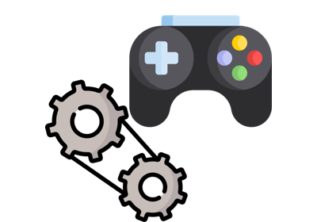
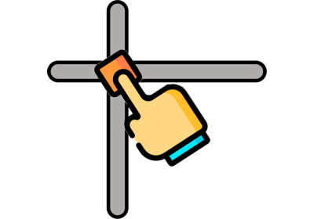
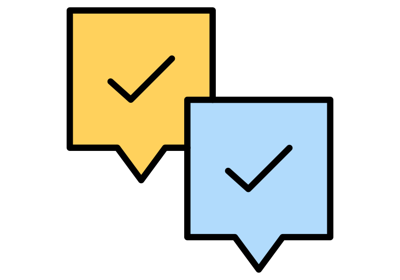

12.1.10.8. User interface# Dialog Dialog Property dialog Property dialog Simple UI Simple UI  Motor axis controller Motor axis controller Algorithm cancel and progress widget Algorithm cancel and progress widget Auto connect signals Auto connect signals Camera widget Camera widget Cloud viewer Cloud viewer Dataobject table Dataobject table Dockwidget Dockwidget Embedded plots Embedded plots GUI icons as images GUI icons as images GUI icons from resources GUI icons from resources Interrupt Interrupt ItomUI class ItomUI class List widget List widget Observe parallel functions Observe parallel functions Parameter editor widget Parameter editor widget Roughness evaluation Roughness evaluation  Slider 2D Slider 2D Splitter Splitter  Statusbar Statusbar Stylesheet editor Stylesheet editor Table widget Table widget Measure tool Measure tool UI shape UI shape Window Window